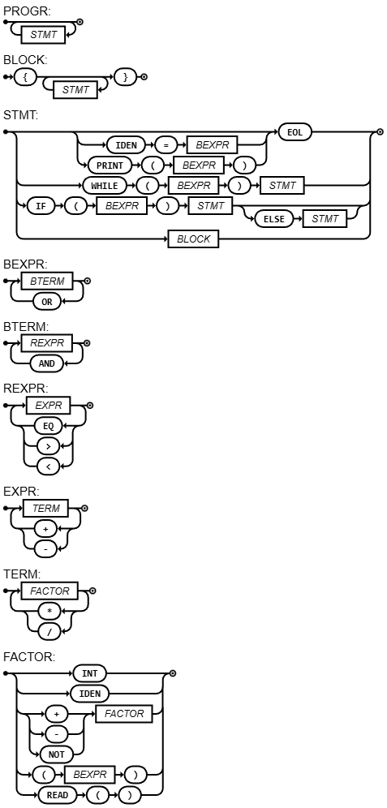
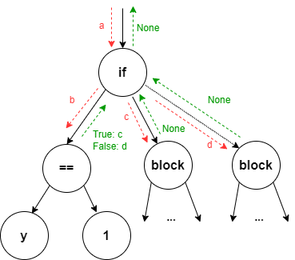
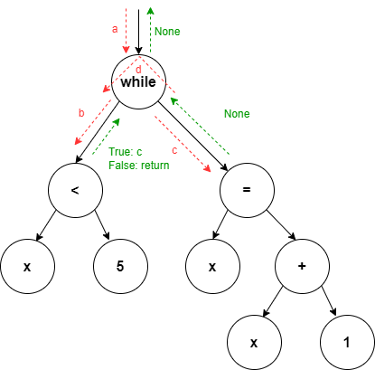

Roteiro 6 (Functional) - v2.1
Entrega: 07/Apr/2026 às 07h15
Objetivos
- Implementar operadores booleanos e relacionais.
- Implementar condicinais e laços
- Implementar leitura do terminal.
Ao final do roteiro, queremos conseguir interpretar:
i = 1;
n = 5;
f = 1;
if (n < 2) {
f = 1;
} else {
while (i < n || i == n) {
f = f * i;
i = i + 1;
}
}
Requisitos do Roteiro
Conforme explicado em aula, o novo Diagrama Sintático será:

Atenção
A figura representa o modelo equivalente para linguagem C. Algumas adaptações são necessárias para linguagem compilada no semestre.
EBNF:
PROGRAM = { STATEMENT } ;
STATEMENT = ((IF, "(", BOOLEXPRESSION, ")", STATEMENT, ("ELSE", STATEMENT) | ε) | (WHILE, "(", BOOLEXPRESSION, ")", STATEMENT) | (IDENTIFIER, "=", BOOLEXPRESSION) | (PRINT, "(", BOOLEXPRESSION, ")") | ε), EOL ;
BOOLEXPRESSION = BOOLTERM, { "||", BOOLTERM } ;
BOOLTERM = RELEXPRESSION, { "&&", RELEXPRESSION } ;
RELEXPRESSION = EXPRESSION, ("==" | "<" | ">"), EXPRESSION ;
EXPRESSION = TERM, { ("+" | "-"), TERM } ;
TERM = FACTOR, { ("*" | "/"), FACTOR } ;
FACTOR = ("+" | "-"), FACTOR | "(", BOOLEXPRESSION, ")" | NUMBER | READ, "(", ")" ;
NUMBER = DIGIT, {DIGIT} ;
DIGIT = 0 | 1 | ... | 9 ;
IDENTIFIER = LETTER, {LETTER | DIGIT | "_"} ;
LETTER = a | b | ... | z | A | B | ... | Z ;
A explicação das funcionalidades que serão implementadas serão divididas por etapas de compilação.
Lexer
Adicionar os novos símbolos que representam as operações binárias e unária:
- && - token
AND - || - token
OR - ! - token
NOT
E os operadores relacionais:
- == - token
EQ - > - token
GT - < - token
LT
Adicionar também as novas palavras reservadas:
- if - token
IF - while - token
WHILE - else - token
ELSE - scanln! - token
READ
Outros novos símbolos:
- { - token
OPEN_BRA - } - token
CLOSE_BRA
AST
Os operadores binários e unário utilizarão a estrutura já presentes nos nós BinOp e UnOp respectivamente. Deve-se convencionar 1 para True e 0 para False.
O IF irá gerar um novo nó If com 3 filhos, a depender da presencial opcional do ELSE. O evaluate do nó irá realizar o evaluate do primeiro filho e avaliar se irá executar o segundo ou terceiro filho.

O WHILE irá gerar um novo nó while com 2 filhos. O evaluate do nó irá realizar o evaluate do primeiro filho e executar o evaluate do segundo enquanto for verdadeiro.

Finalmente, o READ será um nó sem filhos. A sua execução irá retornar uma entrada do terminal do tipo inteiro. Como o nó faz parte do grupo de expressões, manterá a estrutura com evaluate, porém realizará IO.
Para manter a assinatura original do evaluate, vamos cometer uma pequena heresia e usar um unsafePerformIO, que irá permitir realizar o getLine e retornar um Int.
Parser
Adicionar a função parseBlock. Ela será parecida com o parseProgram, porém considerando a abertura e fechamento de chaves. Ela gerará um nó Block.
Adicionar os novos caminhos em parseStatement. Atentar para quais nós serão gerados para cada caminho.
Adicionar as funções parseBoolExpression, parseBoolTerm e parseRelExpression. Elas serão análogas à função parseExpression, inclusive irão gerar nós da classe BinOp.
Corrigir a função parseFactor para incluir a operação unária NOT e a função READ.
Tarefas:
- Atualizar o Diagrama Sintático e a EBNF no GitHub
- Alterar o
Lexerconforme explicação acima - Alterar e criar os novos nós da
ASTconforme explicação acima - Alterar o
Parserconforme explicação acima
Base de Testes:
Proponha um programa de testes, com TODOS os seguintes elementos:
- Laços com and/or/not
- Condicionais com and/or/not
- Leitura do terminal
Extra Credit
Question
Implementar a operação ternária condicional (conhecido como if expression). Esse operador tem a maior precedência possível. Implementar também a estrutura for.
Segue um exemplo abaixo:
rust
x = e;
n = if x > 2 { 5 } else { 3 }; // if x > 2 then 5 else 3
for (i = 0; i < n; i = i + 1) {
println!(i);
}
Exercícios Adicionais
- Proponha a implementação da estrutura repeat (análogo ao C)
- Proponha a implementação da estrutura switch (análogo ao C)
- Proponha modificações na linguagem para incorporar tipagem forte.